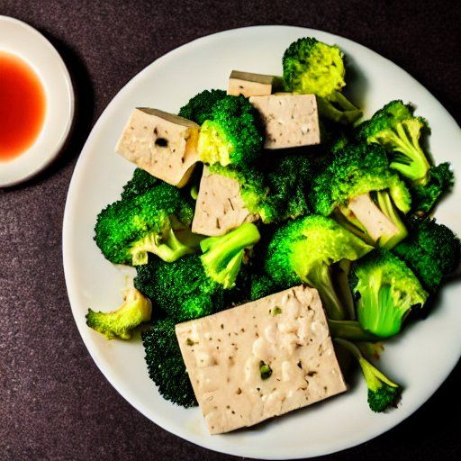

Tofu à la vapeur
Ingrédients
-
450 g de tofu

-
1 brocoli
-
30 haricots verts
Sauce
-
2 gousses d'ail
-
1 1/2 c. à thé de moutarde de Dijon
-
1 soupçon d'huile de sésame
-
2 c. à soupe de sauce huître
-
1/2 t d'huile neutre
-
2 c. à soupe de sirop d'érable
Instructions
Au besoin, préparer du riz en accompagnement avant de commencer cette recette.
Couper 450 g de tofu en dés.
Couper les légumes.
- 1 brocoli
- 30 haricots verts
Cuire à la vapeur le tofu, le brocoli et
les haricots verts jusqu'à ce qu'ils soient tendres.
Sauce
Hacher 2 gousses d'ail.
Dans un bol, combiner l'ail, la moutarde, l'huile de sésame et la sauce huître. Bien mélanger à l'aide d'une fourchette.
- 2 gousses d'ail
- 1 1/2 c. à thé de moutarde de Dijon
- 1 soupçon d'huile de sésame
- 2 c. à soupe de sauce huître
Ajouter très lentement l'huile, en filet, tout en fouettant
vivement avec une fourchette. Toujours mélanger dans le même sens et attendre que chaque ajout soit
incorporé avant d'en ajouter davantage afin de former une émulsion.
- 1/2 t d'huile neutre
Ajouter 2 c. à soupe de sirop d'érable et bien mélanger.
- 2 c. à soupe de sirop d'érable
Réfrigérer la sauce pour conserver une texture semblable à une mayonnaise. Mélanger avant de servir si
nécessaire.
Servir le tofu et les légumes vapeur accompagnés de riz et de la sauce.